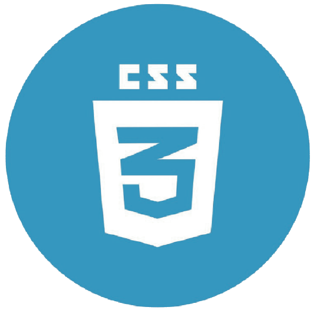

Objetivo del OVI
El Objetivo de nuestro OVI es conceptualizar la conceptualización de temas como HTML, CSS, JavaScript, Git y Git Hub, de acuerdo a un consenso realizado, para plasmar la idea escogida en código HTML, CSS, se usará repositorio y a través de este se publicará como página WEB de esta manera se demostrarán los conceptos adquiridos para la realización de la actividad, aplicando también el trabajo en equipo y uso del versionamiento en la creación del sitio,

CSS
Es un lenguaje de hojas de estilos creado para controlar el aspecto o presentación de los documentos electrónicos definidos con HTML y XHTML. CSS es la mejor forma de separar los contenidos y su presentación y es imprescindible para crear páginas web complejas.
La filosofía de CSS se basa en intentar separar lo que es la estructura del documento HTML de su presentación. Por decirlo de alguna manera: la página web sería lo que hay debajo (el contenido) y CSS sería un cristal de color que hace que el contenido se vea de una forma u otra. Piensa por ejemplo qué ocurre si tienes un libro de papel y lo miras a través de un cristal de color azul: que ves el libro azul. En cambio, si lo miras a través de un cristal amarillo, verás el libro amarillo. El libro (el contenido) es el mismo, pero lo puedes ver de distintas maneras.
Leer más…
HTML5
HTML5 es un lenguaje markup usado para estructurar y presentar el contenido para la web. Es uno de los aspectos fundamentales para el funcionamiento de los sitios, pero no es el primero
Esta evolución tan anárquica del HTML ha supuesto toda una serie de inconvenientes y deficiencias que se han superado gracias a la introducción de nuevas tecnologías que ayudaron a organizar, perfeccionar y automatizar el funcionamiento de las páginas web. Entre ellas podemos nombrar las CSS (Cascading Style Sheets u Hojas de Estilo en Cascada), el lenguaje JavaScript, etc.
Leer más….
GIT- GitHub
Los sistemas de control de versiones son programas que tienen como objetivo controlar los cambios en el desarrollo de cualquier tipo de software, permitiendo conocer el estado actual de un proyecto, los cambios que se le han realizado a cualquiera de
sus piezas, las personas que intervinieron en ellos, etc.
Este artículo sirve como introducción a este tipo de herramientas de manera global, pero también para conocer uno de los sistemas de control de versiones existentes en la actualidad que se ha popularizado tremendamente, gracias al sitio Github. Se trata
de Git, el sistema de control de versiones más conocido y usado actualmente, que es el motor de Github. Al terminar su lectura entenderás qué es Git y qué es Github, dos cosas distintas que a veces resultan confusas de entender por las
personas que están dando sus primeros pasos en el mundo del desarrollo
Leer más…